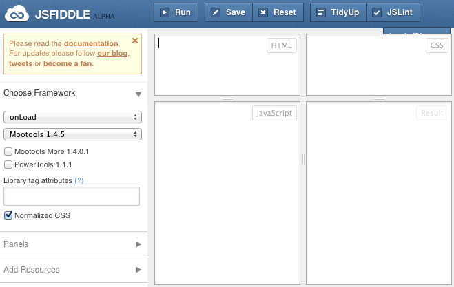
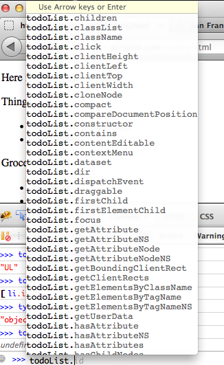
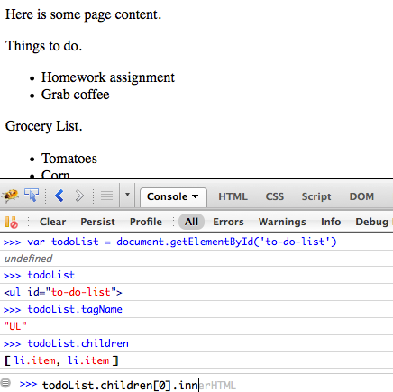
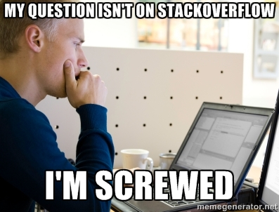

Javascript
Table of Contents
- 1 Javascript
- 2 General Purpose
- 3 Limited
- 4 Console
- 5 jsFiddle
- 6 Variables
- 7 Strings
- 8 Lists
- 9 Objects
- 10 Functions
- 11 DOM
- 12 Inspecting the DOM
- 13 Selecting Elements
- 14 Raw vs jQuery
- 15 Modifying the DOM
- 16 Apply CSS style
- 17 Synchronous
- 18 Asynchronous
- 19 Callbacks
- 20 Event -> Function
- 21 Listen to events
- 22 jQuery
- 23 AJAX
- 24 Infinite Scroll
- 25 jQuery AJAX
- 26 JSON
- 27 Summary
1 Javascript
2 General Purpose
- Javascript full programming language
- Started in the browser
- Now used on servers, command line, devices…
2.1 Spread of Javascript notes
- If it can be written in JS, it will be
- Very lightweight language, lots of reach
3 Limited
- Manipulate the DOM
- Validate form values
- make asynchronous web requests (AJAX)
3.1 This lecture notes
- We'll just scratch the surface to get a sense of what's possible
- Basics: adding elements and information to the DOM
- Checking values
- Understand asynchronous calling
- Focusing on what makes Javascript unique for the web
4 Console two_col

- Firebug or Chrome Tools run Javascript
- Easiest way to play with language
console.logcan print to the log from anywhere
4.1 Demo notes
- Open Chrome Tools, setting variable
- document.getElementsByTagName('IMG')
- assign to variable
- for( var i=0; i<imgTags.length; i++) {console.log(imgTags[i].src);}
5 jsFiddle center

- Write and run HTML, CSS, Javascript
6 Variables
- Declare with
varto scope correctly - Weak, dynamic typing
var a = 3; var b = 5; var c = a + b;
6.1 Typing notes
- What is
c? - Don't worry too much
- Means you can assign whatever you want to a variable name
- Different types can be combined… Javascript tries to do the right thing, but it can be wrong
7 Strings
var a = 'hello '; var b = 'world!'; var c = a + b;
7.1 Quote Char notes
+ What is =c=?
+ Single or double quotes, up to you
ORG-LIST-END-MARKER
8 Lists
var l = [1 ,2, "jim"]; l[1];
8.1 Indexed notes
- 0 indexed
- Will return 2
9 Objects
- Similar to Maps or dicts
var titles = {info253: 'Web Arch', info256: 'Applied NLP'}; titles.info253; /* 'Web Arch' */ var schools = {berkeley: {info253: 'Web Arch'}, stanford: {cs101: 'Intro CS'}}; schools.stanford.cs101; /* 'Intro CS' */
9.1 Nested notes
- May be nested
- Any datatypes for values
- Strings for keys
10 Functions
var add = function(a, b) {return a + b;} var c = add(2, 7) /* c is now 9 */ var arithmetic = {add: add, subtract: function(a, b) {return a - b;}}; var d = arithmetic.subtract(11, 4); var e = arithmetic.add(0, 3); /* d is now 7; e is now 3; */
11 DOM animate
- Document Object Model
documentis a Javascript Object- You can modify it and reflect the changes
12 Inspecting the DOM two_col
- You can use
childNodesto explore children - Will return a list
document.childNodes[2]

13 Selecting Elements center

getElementById('target')
14 Raw vs jQuery
/* raw */ document.getElementById('to-do-list'); /* or getElementsByTagName, and getElementsByClassName */ /* jQuery */ $('#to-do-list'); $('#to-do-list li.item');
14.1 Format notes
- What format does the jQuery selector remind you of?
- Automatically selects the right raw Javascript to call
- Trade-off: can be slower, unexpected results
15 Modifying the DOM
.innerHTMLis the text HTML inside the element
- Homework assignment
- Grab coffee
15.1 Modify notes
- use non-slide version
- var todoList = document.getElementById('to-do-list');
- todoList.innerHTML += '<li class="item">Go out for dinner</li>';
16 Apply CSS style
todoList.childNodes[0].style.background = "pink"; /* jquery */ $('#to-do-list .item').css('background', 'green');
17 Synchronous
- Linear execution, waiting for each function to finish
- "End" of a program when all statements executed
- When do you want your Javascript to "finish"?
17.1 Never! notes
- Javascript on the page is always responding to the user
- When updating the page, or requesting information from the server, we don't want the whole app to freeze
18 Asynchronous
- Respond to events independently
- Run functions in response to actions
- "Callbacks" instead of being "on hold"
18.1 Notes notes
- Events include: page scroll, clicking, submitting forms, hovering, page finished loading
- When those events happen, run some function.
- Callbacks an example of this
19 Callbacks two_col
- You want to make a request to your Bank
- Dial their number… on hold
- Do you sit and wait? or have them call you back?

19.1 Trade-offs notes
- Wait: don't get confused, context switch
- Wait: but a lot of wasted time, no on else can talk to you
- Call back: frees you up
- Call back: but you have to leave instructions in case they call back and you aren't there
20 Event -> Function
20.1 onclick notes
- Handle click event
hrefof "#" means "don't actually go anywhere"
21 Listen to events
function increment() { var el = document.getElementById("ticker"); el.firstChild.nodeValue += " tick"; } var el = document.getElementById("ticker"); el.addEventListener("click", increment);
tick
21.1 Callbacks notes
incrementfunction is called when the click event happens- when we specify
incrementit is the "callback"
22 jQuery
$("#ticker").click(function() {...});
22.1 Inline notes
- jQuery hides the specific calls needed
- functions can be specified inline, you don't need to declare them
- Although it often helps readability
23 AJAX
- Asynchronous Javascript And XML*
- Allows Javascript to make additional requests
- Why?
23.1 More Info notes
- Gather more information, eg. sophisticated auto complete
- Fill in information in place
- Infinite scroll
- *Actually doesn't use XML much anymore: HTML snippets and JSON
24 Infinite Scroll

24.1 AJAX notes
- When the scroll event or view events happen, javascript will make an AJAX call to server
- Server will respond with HTML inside JSON
25 jQuery AJAX
$('#get-homework').click(function(event) {
$.ajax('/snippet', {
success: function(data) {
$('#ajax-snippet').append(data);
event.stopPropagation();
}
})
});
25.1 Callbacks notes
- Again, we're using callbacks
- We can't wait around while the server responds: maybe the user is clicking somewhere else!
- Instead we specify what to do when the call returns
- Also callbacks for
error, other conditions
26 JSON
- Pass data as if it were a Javascript Object
- Common data format in a variety of languages
{firstname: "Jim", lastname: "Blomo",
school: "Berkeley", jobs: ["Yelp", "A9"]}
26.1 Javascript Object Notation notes
- used in place of XML
27 Summary
- Javascript used to manipulate DOM, CSS styles
- Javascript is a full, asynchronous programming language
- Used to enhance existing, semantic HTML